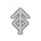
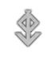
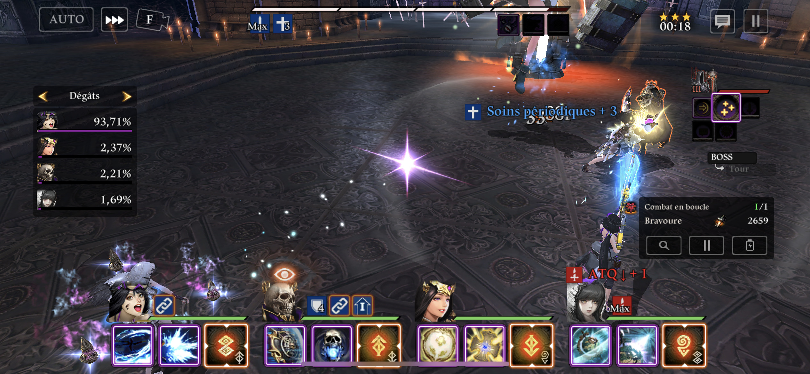

Chaque serviteur dispose d'une marque primaire et d'une marque secondaire. Les marques primaires peuvent être changées, mais les secondaires sont fixes. Il y a 4 marques : soleil levant , soleil couchant , éclipse et coucher de lune  .
.
Les marques primaires et secondaires tiennent lieu d'icone pour la troisième aptitude de chaque serviteur, l'aptitude de combo. Elle porte ce nom car il est possible d'enchaîner les aptitudes de combo de vos différents serviteurs à l'aide des marques. Comment ? C'est en fait très simple.

Sur cette image, vous pouvez voir clairement les marques primaires en grand, et les marques secondaires en petit dans le coin bas droit. Si vous ne connaissez pas les serviteurs, il y a, de gauche à droite : Mabel, Kasar, Teresia, et Sinistra. Lorsqu'un serviteur utilise sa combo, il a une chance d'enchaîner en lançant la combo d'un autre serviteur dont la marque primaire correspond à la marque secondaire du premier serviteur. Dans notre exemple, Kasar peut lancer la combo de Teresia, qui peut lancer la combo de Sinistra, qui elle-même peut lancer la combo de Mabel, qui peut lancer la combo de Kasar. Exemple en vidéo :
Il est possible d'enchaîner 4 combos au maximum, et un même serviteur ne peut pas être 2 fois dans une même combo. Notre exemple n'aurait donc pas pu aller plus loin, même si l'ennemi avait survécu, car non seulement le seul candidat pour enchaîner avec Mabel était kasar, qui était déjà dans la chaîne, qu'il a d'ailleurs lancé, mais en plus une autre combo aurait été la cinquième.
Quelle est la probabilité qu'un serviteur lance la combo d'un autre ? Et bien vous pouvez le voir dans les stats de votre serviteur, il s'agit du taux de marque secondaire. Sa valeur de base diffère selon les classes (20% pour les attaquants, 30% pour les tanks et les soigneurs, 50% pour les soutiens) et sa valeur maximale est de 85%. Vous pouvez l'augmenter via le bonus du set chaîne (+15%), certains potentiels ou certains artefacts. Attention, le calcul du taux se fait en deux étapes : d'abord les stats de la fiche, puis les potentiels (y compris les diminutions dues aux potentiels ennemis) et les artefacts. Chaque étape est cappée à 85%, ce qui veut dire que si vous avez 90% à l'étape 1, et qu'à l'étape 2 la seule chose qui entre en compte soit un potentiel ennemi à -20%, votre taux final sera de 65% et non 70% !
Il est possible de changer les marques primaires dans le menu serviteur, soit en achetant une apparence alternative, soit en équipant un emblème de marque depuis votre inventaire. Les emblèmes équipés, identifiables par le E en haut à droite du symbole de marque, peuvent être déséquipés contre 1000 karats. Les marques liées à une apparence, de base ou alternative, auront un petit T-shirt en haut à droite au lieu du E. Les emblèmes de marques peuvent être soit achetés, soit fabriqués dans la confection. Vous obtiendrez passivement de quoi en fabriquer via la purification ou encore les coffres quotidiens, ou vous pouvez sacrifier des 4nats/5nats.